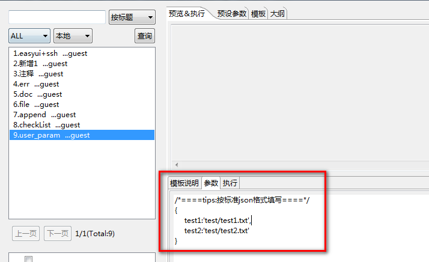
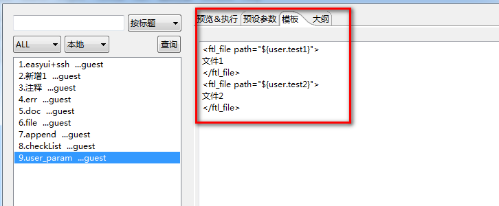
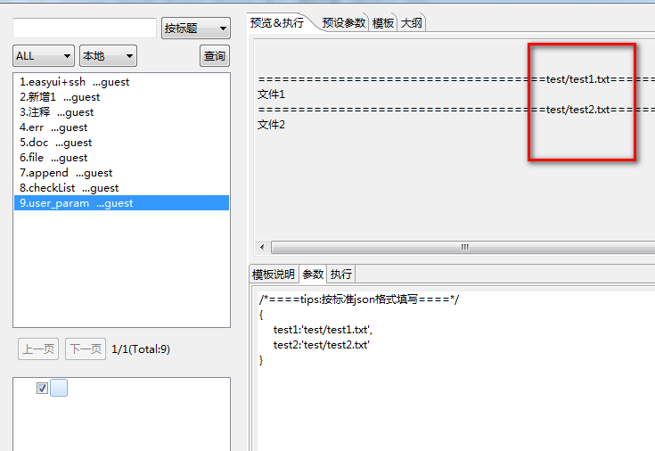

自定义参数:
自定义参数设置见下图，用户参数也是个标准的json串，在模板中访问自定义参数需要加上前缀user.
例:
如下是个依照用户参数值来设定文件生成的路径:
参数设置:
{ test1:'test/test1.txt', test2:'test/test2.txt' }
模板内容如下:
<ftl_file path="${user.test1}">文件1</ftl_file> <ftl_file path="${user.test2}">文件2</ftl_file>
 
勾上左下边复选框，查看预览效果见下
